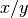

management_modules package¶
Data management¶
data_handling module¶
Managing data and data handling
-
management_modules.data_handling.cbinding(inBinding)[source]¶ Check if variable in settings file has a counterpart in the source code
Parameters: inBinding – parameter in settings file
-
management_modules.data_handling.checkOption(inBinding)[source]¶ Check if option in settings file has a counterpart in the source code
Parameters: inBinding – parameter in settings file
-
management_modules.data_handling.compressArray(map, name='None', zeros=0.0)[source]¶ Compress 2D array with missing values to 1D array without missing values
Parameters: - map – in map
- name – filename of the map
- zeros – add zeros (default= 0) if values of map are to big or too small
Returns: Compressed 1D array
-
management_modules.data_handling.decompress(map, pcmap)[source]¶ Decompress 1D array without missing values to 2D array with missing values
Parameters: - map – numpy 1D array as input
- pcmap – if True map is used as .map format
Returns: 2D array for displaying
-
management_modules.data_handling.divideValues(x, y, default=0.0)[source]¶ returns the result of a division that possibly involves a zero
Parameters: - x –
- y – divisor
- default – return value if y =0
Returns: result of  or default if y = 0
-
management_modules.data_handling.getmeta(key, varname, alternative)[source]¶ get the meta data information for the netcdf output from the global variable metaNetcdfVar
Parameters: - key – key
- varname – variable name eg self.var.Precipitation
Returns: metadata information
-
management_modules.data_handling.loadmap(name, lddflag=False, compress=True, local=False, cut=True)[source]¶ load a static map either value or pc raster map or netcdf
Parameters: - name – name of map
- lddflag – if True the map is used as a ldd map
- compress – if True the return map will be compressed
- local – if True the map is local and will be not cut
- cut – if True the map will be not cut
Returns: 1D numpy array of map
-
management_modules.data_handling.loadsetclone(name)[source]¶ load the maskmap and set as clone
Parameters: name – name of mask map, can be a file or - row col cellsize xupleft yupleft - Returns: new mask map
-
management_modules.data_handling.mapattrNetCDF(name, check=True)[source]¶ get the 4 corners of a netcdf map to cut the map defines the rectangular of the mask map inside the netcdf map calls function
management_modules.data_handling.readCoord()Parameters: - name – name of the netcdf file
- check – checking if netcdffile exists
Returns: cut1,cut2,cut3,cut4
Raises: if cell size is different –
management_modules.messages.CWATMError()
-
management_modules.data_handling.mapattrNetCDFMeteo(name, check=True)[source]¶ get the map attributes like col, row etc from a netcdf map and define the rectangular of the mask map inside the netcdf map calls function
management_modules.data_handling.readCoordNetCDF()Parameters: - name – name of the netcdf file
- check – checking if netcdffile exists
Returns: cut0,cut1,cut2,cut3,cut4,cut5,cut6,cut7
-
management_modules.data_handling.mapattrTiff(nf2)[source]¶ map attributes of a geotiff file
Parameters: nf2 – Returns: cut0,cut1,cut2,cut3
-
management_modules.data_handling.metaNetCDF()[source]¶ get the map metadata from precipitation netcdf maps
-
management_modules.data_handling.multinetdf(meteomaps, startcheck='dateBegin')[source]¶ Parameters: - meteomaps – list of meteomaps to define start and end time
- startcheck – date of beginning simulation
Returns: Raises: if no map stack in meteo map folder –
management_modules.messages.CWATMFileError()
-
management_modules.data_handling.readCoord(name)[source]¶ get the meta data information for the netcdf output from the global variable metaNetcdfVar
Parameters: name – name of the netcdf file Returns: latitude, longitude, cell size, inverse cell size
-
management_modules.data_handling.readCoordNetCDF(name, check=True)[source]¶ reads the map attributes col, row etc from a netcdf map
Parameters: - name – name of the netcdf file
- check – checking if netcdffile exists
Returns: latitude, longitude, cell size, inverse cell size
Raises: if no netcdf map can be found –
management_modules.messages.CWATMFileError()
-
management_modules.data_handling.readmeteodata(name, date, value='None', addZeros=False, zeros=0.0, mapsscale=True)[source]¶ load stack of maps 1 at each timestamp in netcdf format
Parameters: - name – file name
- date –
- value – if set the name of the parameter is defined
- addZeros –
- zeros – default value
- mapsscale – if meteo maps have the same extend as the other spatial static m
Returns: Compressed 1D array of meteo data
Raises: - if data is wrong –
management_modules.messages.CWATMError() - if meteo netcdf file cannot be opened –
management_modules.messages.CWATMFileError()
-
management_modules.data_handling.readnetcdf2(namebinding, date, useDaily='daily', value='None', addZeros=False, cut=True, zeros=0.0, meteo=False, usefilename=False, compress=True)[source]¶ load stack of maps 1 at each timestamp in netcdf format
Parameters: - namebinding – file name in settings file
- date –
- useDaily – if True daily values are used
- value – if set the name of the parameter is defined
- addZeros –
- cut – if True the map is clipped to mask map
- zeros – default value
- meteo – if map are meteo maps
- usefilename – if True filename is given False: filename is in settings file
- compress – True - compress data to 1D
Returns: Compressed 1D array of netcdf stored data
Raises: - if netcdf file cannot be opened –
management_modules.messages.CWATMFileError() - if netcdf file is not of the size of mask map –
management_modules.messages.CWATMWarning()
-
management_modules.data_handling.readnetcdfInitial(name, value, default=0.0)[source]¶ load initial condition from netcdf format
Parameters: - name – file name
- value – netcdf variable name
- default – (optional) if no variable is found a warning is given and value is set to default
Returns: Compressed 1D array of netcdf stored data
Raises: - if netcdf file is not of the size of mask map –
management_modules.messages.CWATMError() - if varibale name is not included in the netcdf file –
management_modules.messages.CWATMWarning()
-
management_modules.data_handling.readnetcdfWithoutTime(name, value='None')[source]¶ load maps in netcdf format (has no time format)
Parameters: - namebinding – file name in settings file
- value – (optional) netcdf variable name. If not given -> last variable is taken
Returns: Compressed 1D array of netcdf stored data
-
management_modules.data_handling.report(name, valueIn, compr=True)[source]¶ For debugging: Save the 2D array as .map or .tif
Parameters: - name – Filename of the map
- valueIn – 1D or 2D array in
- compr – (optional) array is 1D (default) or 2D
Returns: Example: > report(c:/temp/ksat1.map, self.var.ksat1)
-
management_modules.data_handling.returnBool(inBinding)[source]¶ Test if parameter is a boolean and return an error message if not, and the boolean if everything is ok
Parameters: inBinding – parameter in settings file Returns: boolean of inBinding
-
management_modules.data_handling.setmaskmapAttr(x, y, col, row, cell)[source]¶ Definition of cell size, coordinates of the meteo maps and maskmap
Parameters: - x – upper left corner x
- y – upper left corner y
- col – number of cols
- row – number of rows
- cell – cell size
Returns:
-
management_modules.data_handling.valuecell(coordx, coordstr)[source]¶ to put a value into a raster map -> invert of cellvalue, map is converted into a numpy array first
Parameters: - coordx – x,y or lon/lat coordinate
- coordstr – String of coordinates
Returns: 1D array with new value
-
management_modules.data_handling.writeIniNetcdf(netfile, varlist, inputlist)[source]¶ write variables to netcdf init file
Parameters: - netfile – file name
- varlist – list of variable to be written in the netcdf file
- inputlist – stack of 1D arrays
Returns:
-
management_modules.data_handling.writenetcdf(netfile, prename, addname, varunits, inputmap, timeStamp, posCnt, flag, flagTime, nrdays=None, dateunit='days')[source]¶ write a netcdf stack
Parameters: - netfile – file name
- prename – 1st part of variable name with tell which variable e.g. discharge
- addname – part of the variable name with tells about the timestep e.g. daily, monthly
- varunits – unit of the variable
- inputmap – 1D array to be put as netcdf
- timeStamp – time
- posCnt – calculate nummer of the indece for time
- flag – to indicate if the file is new -> netcdf header has to be written,or simply appending data
- flagtime – to indicate the variable is time dependend (not a single array!)
- nrdays – (optional) if indicate number of days are set in the time variable (makes files smaller!)
- dateunit – (optional) dateunit indicate if the timestep in netcdf is days, month or years
Returns: flag: to indicate if the file is set up
timestep module¶
Managing time
-
management_modules.timestep.Calendar(input, errorNo=0)[source]¶ Get the date from CalendarDayStart in the settings xml Reformatting the date till it fits to datetime
Parameters: - input – string from the settingsfile should be somehow a date
- errorNo – 0: check startdate, enddate 1: check startinit
Returns: a datetime date
-
management_modules.timestep.addmonths(d, x)[source]¶ Adds months to a date
Parameters: - d – date
- x – month to add
Returns: date with added months
-
management_modules.timestep.checkifDate(start, end, spinup)[source]¶ Checks if start date is earlier than end date etc And set some date variables
Parameters: - start – start date
- end – end date
- spinup – date till no output is generated = warming up time
Returns: a list of date variable in: dateVar
-
management_modules.timestep.ctbinding(inBinding)[source]¶ Check if variable in settings file has a counterpart in source code
Parameters: x – variable in settings file to be tested Returns: Raises: if variable is not found send an error: management_modules.messages.CWATMError()
-
management_modules.timestep.date2indexNew(date, nctime, calendar, select='nearest', name='')[source]¶ The original netCDF4 library cannot handle month and years Replace: date2index This one checks for days, month and years And set some date variables
Parameters: - date – date
- nctime – time unit of the netcdf file
- select – (optional) which date is selected, default: nearest
- name – (optional) name of th dataset
Returns: index
-
management_modules.timestep.date2str(date)[source]¶ Convert date to string of date e.g. 27/12/2018
Parameters: x – date as (datetime) Returns: date string
-
management_modules.timestep.datetoInt(dateIn, begin, both=False)[source]¶ Calculates the integer of a date from a reference date
Parameters: - dateIn – date
- begin – reference date
- both – if set to True both the int and the string of the date are returned
Returns: integer value of a date, starting from begin date
-
management_modules.timestep.datetosaveInit(initdates, begin, end)[source]¶ Calculates the save init dates
Parameters: - initdates – one or several dates
- begin – reference date
- end – end date
Returns: integer value of a dates, starting from begin date
-
management_modules.timestep.timemeasure(name, loops=0, update=False, sample=1)[source]¶ Measuring of the time for each subroutine
Parameters: - name – name of the subroutine
- loops – if it it called several times this is added to the name
- update –
- sample –
Returns: add a string to the time measure string: timeMesString
configuration module¶
Loading and parsing of the settings file
-
class
management_modules.configuration.ExtParser(*args, **kwargs)[source]¶ Bases:
configparser.ConfigParseraddition to the parser to replace placeholders
Example
PathRoot = C:/work MaskMap = $(FILE_PATHS:PathRoot)/data/areamaps/area.tif
-
management_modules.configuration.parse_configuration(settingsFileName)[source]¶ Parse settings file
Parameters: settingsFileName – name of the settings file Returns: parameters in list: binding, options in list: option
-
management_modules.configuration.read_metanetcdf(metaxml, name)[source]¶ Read the metadata for netcdf output files unit, long name, standard name and additional information
Parameters: - metaxml – file mit information for netcdf files (metadata)
- name – file name information
Returns: List with metadata information: metaNetcdfVar
management_modules.messages module¶
Error handling - giving out messages
-
exception
management_modules.messages.CWATMError(msg)[source]¶ Bases:
ExceptionThe error handling class prints out an error
Parameters: Warning – class CWATMError Returns: prints out a message about an error
-
exception
management_modules.messages.CWATMFileError(filename, msg='', sname='')[source]¶ Bases:
management_modules.messages.CWATMErrorThe error handling class prints out an error
Parameters: Warning – class CWATMError Returns: prints out a message about file error
-
exception
management_modules.messages.CWATMRunInfo(outputDir, Steps=1, ensMembers=1, Cores=1)[source]¶ Bases:
Warningprints out an error
Parameters: Warning – class warning Returns: prints out a message - Warning
- warning given with a header and a message from the subroutine
-
exception
management_modules.messages.CWATMWarning(msg)[source]¶ Bases:
Warningthe error handling class prints out an error
Parameters: Warning – class warning Returns: prints out a message
Handling output of CWATM
Program management¶
Global definition of variables
globals module¶
Global definition of variables
dynamicModel module¶
Framework of initial and dynamic modules
replace_pcr module¶
Some pcr operation are done in numpy
-
management_modules.replace_pcr.npareaaverage(values, areaclass)[source]¶ numpy area average procedure
Parameters: - values –
- areaclass –
Returns: calculates the average area of a class
-
management_modules.replace_pcr.npareamajority(values, areaclass)[source]¶ numpy area majority procedure
Parameters: - values –
- areaclass –
Returns: calculates the majority of an area of a class